This is model of the 2D steady lid-driven cavity using SIMPLE with a collocated grid. The problem below shows a square cavity dimensions 1m x 1m with the top lid moving at 1 m/s as a boundary condition. The rest of the walls will have the no-slip boundary condition and no normal velocities. We will test this with varying Reynolds Numbers.
In figure 1, we have the flow field for Re = 100 on a 32x32 grid. We can see the propagation of the lid velocity towards to right, which then hits the right wall and creates a vortex in the center as it swirls. We also have individual graphs for the u velocity, v velocity, and pressure gradient.
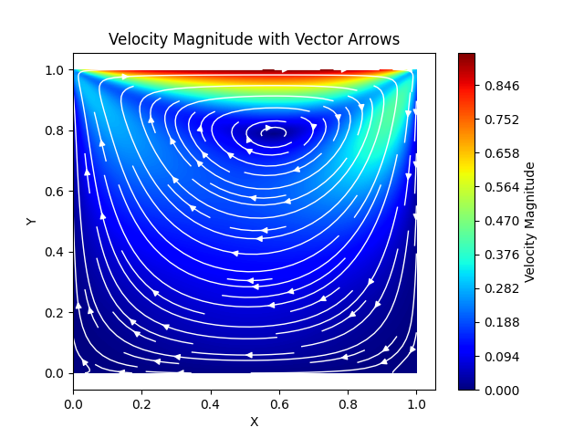
We also have individual graphs for the u velocity, v velocity, and pressure gradient.
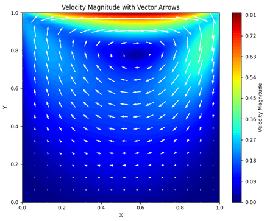
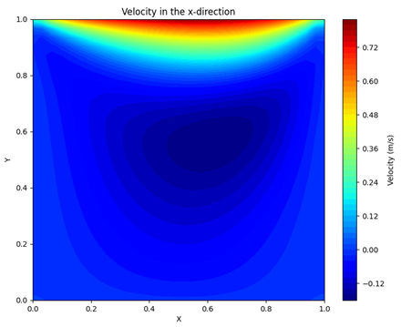
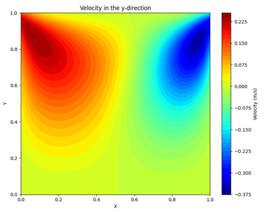
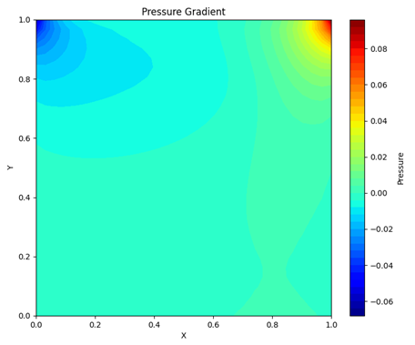
Next we have residuals to show convergence. Note that the residuals for v have a logarithmic bahavior. I am not sure what causes this, but I suspect an error in the script.
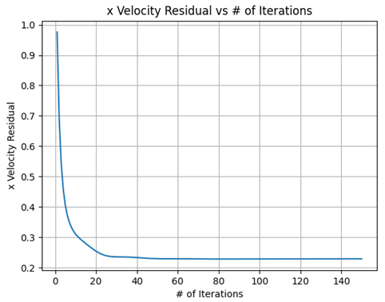
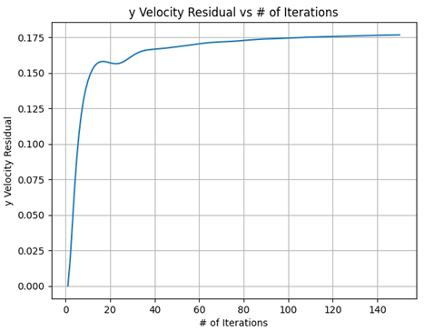
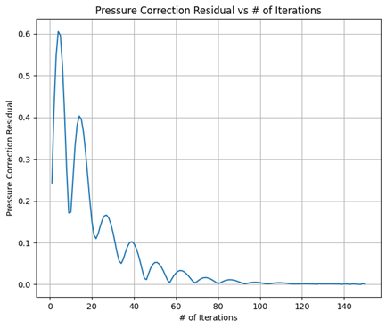
We also have the centerline velocities.
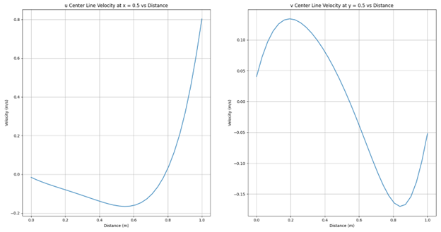
To display stability, I tested with an increased grid size and higher Reynolds Numbers. From these tests, I found that it takes more iterations as we increase the grid size and Reynolds Number. The original Python script was too because of how much overhead the Gauss Seidel function had, since Python is an interpreted language, which needs to be translated to machine code. For speed, I made the Gauss Seidel function in C, which made the code run about 140x faster.
For Reynolds Number of 1000, I ran the code for about 500 iterations. This results in the accurate capturing of the large center vortex, along with the recirculation zones in the bottom corners. For Reynolds Number of 10000, I ran the code for about 1000 iterations. This is also accurate when comparing to other figures found on the internet. The main different we see between Re = 1000 and Re 10000 is that vortex is larger and more circular and the recirculation zones are more present.
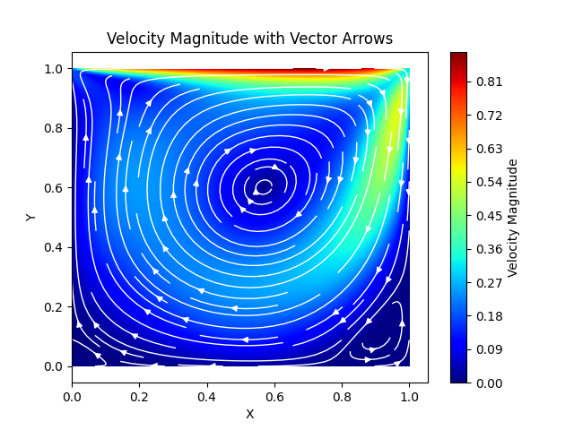
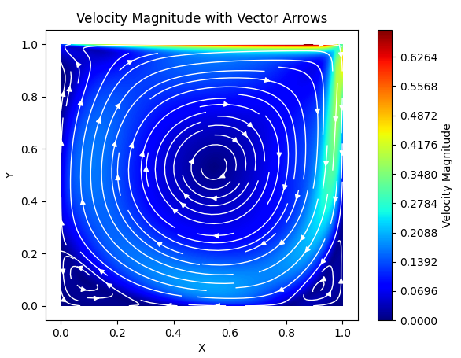
The code is also capable of choosing which lid is moving. Below is the right wall moving upward in the positive direction.
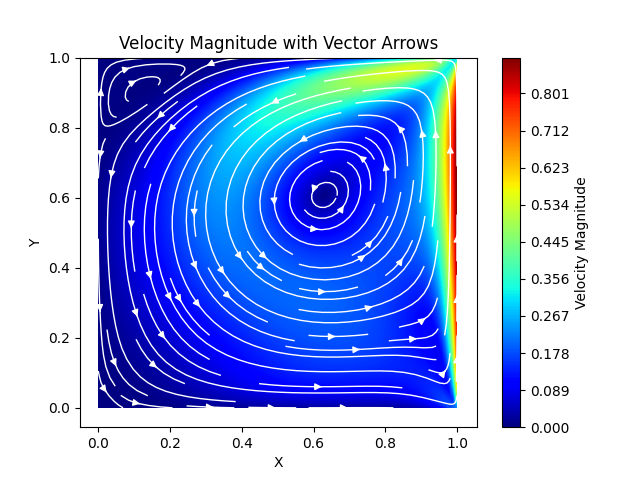